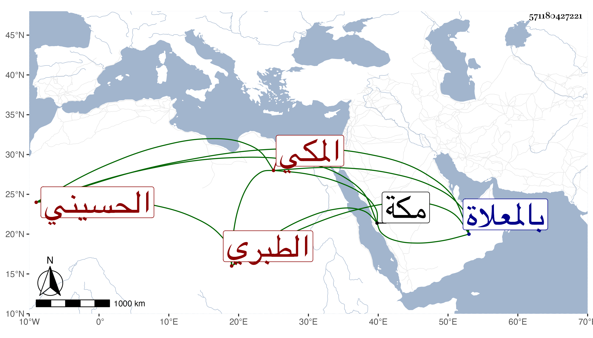

0902Sakhawi.DawLamic.ITO20230111-ara1.EIS1600.571180427221
Biography ID: 571180427221
626
فاطمة المدعوة مباركة ابنة أبي اليمن محمد بن الشهاب أحمد بن الرضى إبراهيم بن محمد أم الحسن الحسيني الطبري الآملي المكي ابنة عم التي قبلها وأمها حبشية لأبيها ، أحضرت في الثالثة على جدتها أم أبيها حسنة أبنة محمد بن كامل خماسيات ابن النقور ، وسمعت في سنة ست وسبعين وسبعمائة على عمتيها الفاطمتين ابنتي أحمد بن الرضي إبراهيم المسلسل وتساعيات جدهما الرضى ومن زينب ابنة أحمد بن ميمون التونسي بلدانيات السلفى ، وأجاز لها ابن النجم وابن الهبل وعمر النقبي وابن اميلة والصلاح بن أبي عمر وابن السوقي والحافظان ابن رافع والمحب الصامت وغيرهم وحدثت سمع منها الفضلاء كالتقي بن فهد وبنيه ، وماتت بعد أن اضرت في سابع المحرم سنة ست وثلاثين بمكة ودفنت بالمعلاة .
